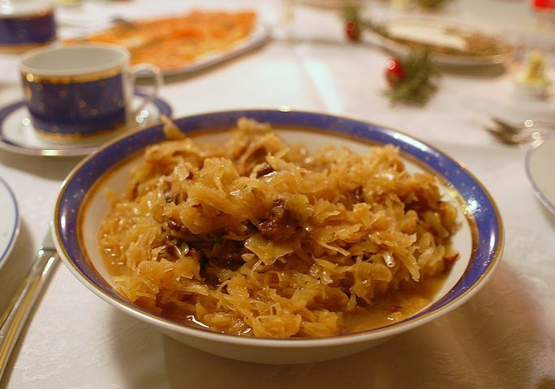

Advent of Code 2020
Intro
This year I joined the challenge with the intention to make it to the end, no matter what. I did it out of curiosity: with the aim to challenge my Python skill and have some brain exercise. As a beginner I solved first puzzles in the previous years but didn't make it to the 3rd day. This year was supposed to be different.
Maybe making it to the end doesn't sound like a good-enough motivation, but it worked for me. The first days of the challenge were quite easy, backing up the the main motivation. Seeing your first earned stars makes you feel good about yourself, so you want to push your limits even further ;).
Puzzles
Tasks complexity grew gradually but that was to expect. I didn't really get to do anything else in my "free" time except for AoC in December. This needs to be counted with when joyfully joining the challenge.
AoC doesn't require any programming style, that's up to you. People in the subreddit were sharing their insane solutions in Minecraft, Factorio or even the whole event (all 25 days!) as Python oneliner. My idea was to refresh a bit of everything, so the solutions look like Polish bigos.

bigos, do try it at home source
{kind=link}
I used the classes once or twice, some of the puzzles were short enough to be solved with a few lines without special ordering. With most of the puzzles I defined at least some functions as I split the task to simpler problems and then was going to tackle the big complex one.
I realized that a big challenge for me is to sew up the big solution from small subtasks. At some days the puzzle was too complex to see the solution straight away. I solved the smallest parts then, like applying the rules and evaluating the round, and at the end I engineered the working whole from the small pieces I had. This typically led to some level of code ugliness.
Some surprises on the way
There was A LOT of input processing. Every day new structure.
A great variety of tasks appeared. One day you navigate the ship, another create 4D cubes just to implement the input validation rules the next one. Jumping from one context to another was a must.
Some problems required hours to crack. Being still more of a beginner I saw most of the problems for the first time. I don't regret a single hour.
The best help to a programmer? Notebook and pencil. The second best help? Community to ask, support, laugh and uncork the bottleneck when there comes one.
I realized what do the people mean when they apply the categories of not/elegant to code. There are some places in my solutions which could use some better approach, but I wasn't fit to solve it myself right away. Sometimes I didn't know how, sometimes it would just take too much time. This could have been the opportunity not to brute force the solutions, but often this was the quickest way to get to the end of the task. I intend not to start code shaming myself though.
Aaaand it is easier to code with a fever than to code with a headache. Checked so that you don't have to.
Community
I learned a lot from reading the solutions of the small group of PyLadies here in Czechia. When solving a puzzle I could typically see only one way to do it - mine - and seeing how differently the others think through issues was genuinely refreshing. A piece of competition we had using our private Leaderboard was another element of keeping the motivation up and our common Slack channel was the first place I often directed my steps to when having a struggle.
Learning opportunities
Some first timers:
- Python standard library gems: itertools, collections
- regular expressions (Python library re): The first day of using regex was painful. The 15th - easy peasy.
- lambdas: great tool for lookup dictionaries
- I became aware of the big-O complexity, that there exist more and less efficient data types and operations
Growing in confidence:
- navigating Python docs. I started using Zeal and like it a lot
- understanding the task, using test data to validate my solutions
- breaking the task down to small pieces
- coding without debug printing every second line (I can keep some abstract representation of the ongoing transformations in my head)
My final score is 48/50. In the last unsolved big task I have to create a picture out of very small pieces. As I didn't enjoy the first half of the puzzle at all, I just can't force myself to sit and finish it off.
The end
If I started going through 2020 again, I would most certainly solve some of the puzzles differently. With new skills and foreseeing more problems as they occur, I would look for another approach. I feel tempted to go through AoC from the previous years as an ongoing exercise during 2021.
Note to self: don't be too optimistic about this one.